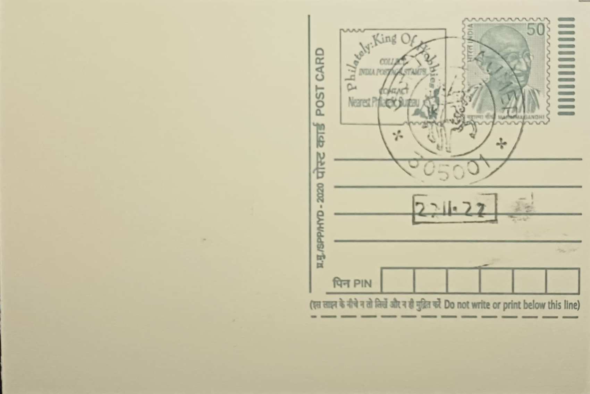

Prithviraj Chauhan
पृथ्वीराज चौहान


The Chahamanas, or Chauhans, of Sapadalaksha rose to prominence in the Aravalli region after the decline of the Gurjara-Pratihara Empire in the eleventh century, establishing Ajmer as their capital under rulers such as Ajayaraja II, who is traditionally credited with founding the city. Prithviraj III, remembered popularly as Prithviraj Chauhan, was born around 1149-1166 CE to King Someshvara and Queen Karpuradevi, a Kalachuri princess. His father died when Prithviraj was still a child, and he ascended the Chahamana throne under his mother's regency before taking full control of the kingdom while still in his youth, inheriting a realm that stretched across much of present-day Rajasthan and into the Delhi region.
As the last independent Hindu ruler to hold both Delhi and Ajmer before the onset of Sultanate rule, Prithviraj Chauhan occupies a singular place in Indian historical memory, straddling the line between documented medieval history and heroic legend. His reign is significant not merely for its military episodes but for marking the closing chapter of indigenous Rajput sovereignty in north India, after which the region came under a long succession of Turkic and Afghan-origin dynasties. He is venerated today less as an administrator than as an archetype of Rajput chivalry, and his name is invoked across Rajasthan in contexts ranging from school curricula to civic monuments as shorthand for resistance against foreign conquest.
Prithviraj's most consequential military engagements came against Muhammad of Ghor, the Ghurid ruler expanding from Afghanistan into the Indo-Gangetic plain. At the First Battle of Tarain in 1191, Prithviraj's forces, bolstered by a confederacy of allied Rajput chiefs, routed the Ghurid army and reportedly captured Muhammad of Ghor himself, who was later released. The following year, at the Second Battle of Tarain in 1192, Muhammad returned with a reorganized force of mounted archers and decisively defeated the Chahamana army; Prithviraj was captured and, according to most historical accounts, subsequently executed, bringing an end to Chahamana rule over Delhi and Ajmer and opening the path for the establishment of the Delhi Sultanate under Qutb-ud-din Aibak.
Much of Prithviraj's enduring popular image derives from the Prithviraj Raso, an epic poem attributed to his court poet Chand Bardai, which recounts his martial exploits and his celebrated elopement with Samyukta, daughter of the Gahadavala king of Kanauj, against her father's wishes. While historians regard large portions of the Raso as later embellishment rather than strict chronicle, the text cemented Prithviraj's status as a folk hero across Rajasthan and the Hindi-speaking belt, inspiring generations of ballads, plays, and regional retellings that blend documented battlefield history with romanticised court drama.
Ajmer continues to commemorate its former ruler through the Prithviraj Smarak, a memorial park on the hill route leading toward Taragarh Fort that was inaugurated on 25 January 1996 in a ceremony attended by senior political figures of the period. Its centrepiece is a bronze equestrian statue of Prithviraj, depicted with his horse's forehoof raised as if in motion, mounted on a stone plinth roughly eleven and a half feet high and offering views across the city and the surrounding Aravalli hills. Maintained today as a public park and viewpoint under local civic authorities, the Smarak draws visitors from across Rajasthan alongside the city's forts and shrines, giving Ajmer a tangible civic marker for the ruler whose name the post office pictorial cancellation also carries.
| Date of Introduction | June 9, 2010 |
|---|---|
| Address | Incharge, |
| Philatelic Bureau, Ajmer HO-PB, | |
| Ajmer (dt.), Rajasthan - 305001. |